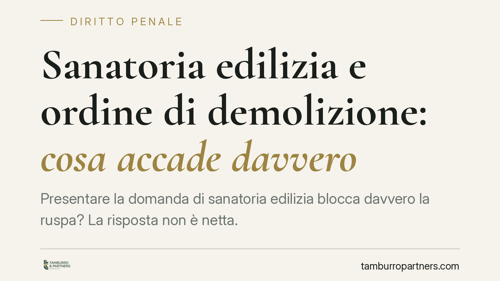

Sanatoria edilizia e ordine di demolizione: cosa accade davvero
Presentare la domanda di sanatoria edilizia blocca davvero la ruspa? La risposta non è netta. L'istanza di accertamento di conformità arresta temporaneamente il procedimento sanzionatorio del Comune, ma non produce una sospensione automatica e generale dell'ordine di demolizione, tanto meno di quello disposto dal giudice penale. Distinguere i due piani è essenziale per non commettere errori gravi.

Il punto della questione
Una convinzione diffusa vuole che basti depositare la domanda di sanatoria per mettere al riparo l'immobile dalla demolizione. È una semplificazione pericolosa.
La presentazione dell'istanza di accertamento di conformità (art. 36 D.P.R. 380/2001) incide sul procedimento sanzionatorio amministrativo, ma non equivale a una sospensione automatica e generalizzata di ogni ordine demolitorio. E non tocca affatto, di per sé, l'ordine di demolizione disposto dal giudice penale con la sentenza di condanna.
Trattandosi di materia che intreccia profilo amministrativo e profilo penale, occorre tenere i due piani ben separati.
Inquadramento normativo
L'art. 36 D.P.R. 380/2001 disciplina l'accertamento di conformità: il responsabile dell'abuso può ottenere il permesso in sanatoria se l'intervento risulta conforme alla disciplina urbanistica ed edilizia vigente sia al momento della realizzazione sia al momento della domanda (cosiddetta doppia conformità).
La riforma del 2024 (D.L. 69/2024, convertito con L. 105/2024) ha rimodulato l'art. 36 e introdotto l'art. 36-bis, che prevede un'ipotesi di sanatoria con doppia conformità attenuata per determinate difformità. Dopo la riforma, il Comune si pronuncia entro 45 giorni (termine oggi previsto dall'art. 36, da verificare caso per caso); decorso inutilmente il termine, la domanda si intende respinta per silenzio. Il silenzio, quindi, va letto come diniego e non come tolleranza o assenso.
Sul versante penale, l'art. 36 ricollega al rilascio del permesso in sanatoria l'estinzione dei reati contravvenzionali edilizi. L'art. 45 prevede che il procedimento penale per i reati urbanistici sia sospeso fino alla definizione del procedimento di sanatoria. L'art. 31, comma 9, disciplina invece l'ordine di demolizione impartito dal giudice penale con la sentenza di condanna: misura di natura ripristinatoria, che segue regole proprie.
Cosa accade dopo la domanda
Sul piano amministrativo, la pendenza dell'istanza determina un arresto temporaneo del procedimento sanzionatorio: il Comune non porta avanti l'esecuzione dell'ordine di demolizione finché non decide sulla domanda. Non si tratta di un annullamento dell'ordine, ma di una sua inefficacia temporanea. La giurisprudenza amministrativa è orientata in questo senso, pur senza riconoscere un effetto sospensivo automatico e incondizionato.
Se la sanatoria è concessa, l'abuso è regolarizzato e l'ordine perde efficacia. Se la domanda è respinta — in modo espresso o per silenzio — l'ordine di demolizione torna eseguibile, senza bisogno di un nuovo provvedimento.
Sul piano penale il meccanismo è diverso. La pendenza dell'istanza sospende il procedimento (art. 45), ma l'ordine di demolizione già disposto dal giudice ex art. 31, comma 9, non viene automaticamente sospeso dalla sola presentazione della domanda. Solo l'effettivo rilascio del permesso in sanatoria, con il conseguente effetto estintivo del reato, può incidere sull'ordine demolitorio penale.
Implicazioni pratiche
Per il proprietario e per il responsabile dell'abuso, la differenza è sostanziale. Confidare in un "blocco" automatico della demolizione espone al rischio concreto che l'esecuzione riprenda al primo diniego, anche tacito.
La sanatoria edilizia è una leva legittima, non un espediente dilatorio: va usata quando sussistono i presupposti di conformità, non per guadagnare tempo. Una domanda priva dei requisiti è destinata al rigetto e riporta l'immobile sotto la ruspa.
Cosa fare in concreto
- Verificate la doppia conformità prima di depositare: la sanatoria presuppone che l'intervento rispetti la disciplina sia al momento dell'abuso sia al momento della domanda. Senza, l'istanza è destinata al rigetto.
- Protocollate la domanda in modo tracciabile, conservando ricevuta e data certa: è il momento da cui decorrono i termini del procedimento.
- Monitorate il termine di decisione (45 giorni ex art. 36, salvo diversa disciplina applicabile): oltre quel termine il silenzio vale come diniego e l'ordine torna eseguibile.
- Distinguete il piano penale da quello amministrativo: se pende un processo o esiste una sentenza di condanna, valutate con il difensore gli effetti dell'art. 45 e dell'art. 36 sull'estinzione del reato e sull'ordine di demolizione del giudice.
- Non sospendete le verifiche tecniche confidando nel mero deposito: predisponete per tempo la documentazione a sostegno della conformità.
Disclaimer
Contributo informativo a cura di Tamburro & Partners - Avv. Giuseppe Tamburro. Non costituisce parere legale.
Ogni condominio ha una storia a sé.
Se gestisci un'amministrazione e vuoi un confronto su una specifica questione condominiale, scrivi allo studio. Ti rispondiamo entro un giorno lavorativo.